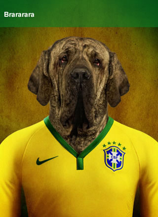

- B
- R
- A
- Z
- I
- L



巴西3-1克洛地亚
布拉特承认选卡塔尔是错误 暗指受政治压力压力
[最新] 维埃拉：放弃纳斯里是重大错误 | 本赛季无可挑剔 | 称名单公布前已知落选
[花絮] 李娜拍巴西世界杯写真 | 里贝里:为纳斯里落选而难过我们是一个真正的集体
[德国] 英媒评世界杯八大热门球队 | 世界杯筹备再起冲突 民众科林蒂安球场外示威
[球队] 斯科拉里透露巴西23人名单已定 | 拜仁官方宣布蒂亚戈手术成功杯
[赛事] 诺伊尔：首战葡萄牙是决赛 | 我们来自足球王国德国可为巴西或意大利出战
世界杯球队住宿奇葩要求：德国最奢侈 一队必备香蕉
无缘世界杯23巨星一览：伊布大圣领衔近6亿强阵
媒评落选世界杯最佳11人：卡卡小罗特维斯入选
那不勒斯妖人面临国籍选择 可为巴西或意大利出战
光脚不怕穿鞋的桑巴军团 | 一场3黄牌的格子军铁卫
埃托奥骂穆里尼奥“蠢货” 自信能再踢3届世界杯
拜仁官方宣布蒂亚戈手术成功 确定缺席世界杯
世界杯筹备再起冲突 民众科林蒂安球场外示威(图)
曝纳斯里考虑退出法国队 称名单公布前已知落选
那不勒斯妖人面临国籍选择 可为巴西或意大利出战
那不勒斯妖人面临国籍选择 可为巴西或意大利出战

 阿尔及利亚
阿尔及利亚
06.14 03:00 am
世界杯倒计时
最后5天
64小时26分钟6秒
完全赛程更多>>
06.13 00:00 巴西VS克罗地亚
06.13 00:00 巴西VS克罗地亚
06.13 00:00 巴西VS克罗地亚
一起吐槽

阿尔维斯吃香蕉
阿尔维斯吃香蕉阿尔维斯吃香蕉阿尔维斯吃香蕉阿尔维斯吃香蕉维斯。阿尔维斯吃香蕉阿蕉阿尔。
| 排名 | 球队 | 赛 | 胜 | 平 | 负 | 积分 |
|---|---|---|---|---|---|---|
| 1 | 比利时 | 10 | 8 | 2 | 0 | 18 |
| 1 | 比利时 | 10 | 8 | 2 | 0 | 18 |
| 1 | 比利时 | 10 | 8 | 2 | 0 | 18 |
| 1 | 比利时 | 10 | 8 | 2 | 0 | 18 |
只有中国球迷不能容
忍迪亚曼蒂落选

费尔南多·何塞·托雷斯·
只有中国球迷不能容
忍迪亚曼蒂落选
费尔南多·何塞·托雷斯·
只有中国球迷不能容
忍迪亚曼蒂落选
费尔南多·何塞·托雷斯·
只有中国球迷不能容
忍迪亚曼蒂落选
费尔南多·何塞·托雷斯·
只有中国球迷不能容
忍迪亚曼蒂落选
费尔南多·何塞·托雷斯·


马拉卡纳体育场
位于里约热内卢州的里约热内卢市，为承办1950年世界杯而兴建，曾经在1950年7月份巴西对阵乌拉圭的世界杯决赛时，创纪录地容纳了19万9854名观众，目前的官方容量是78838人。2014年世界杯的决赛也将在马拉卡纳球场举行。